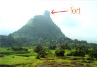

We left on wed morning at about 9.30am aiming to reach on top the Peth (Kothla Gad) fort well before nightfall. There was a huge line at Kurla rly. stn. for tickets and we missed the fast to Karjat by a few seconds. The next was a fast to Badlapur, which we took, as the next to Karjat was after another hour and waiting at Badlapur would be better than waiting at dirty Kurla. After a longish wait at Badlapur, we finally got the Karjat train and reached by 12.30. We had another wait at Karjat ST stand for the bus to Ambivili. There were four of us. Me, my brother Vivek, his school chum Vaibhav and his college friend Soham 'rangela'. While we waited, Soham found some super sweet pineapple slices on which we nibbled. The bus was a very old and rattle-some tub. We managed to get all out bones shaken by the time we reached Ambivili after an hour and 20 minutes. We had some water at the village general stores cum restaurant and started for Peth village. The trail to Peth village is a bullock-cart track and so it was easy going. We made good time to reach the village in an hour and an half. At the village, which by-the-way is on a road to nowhere and does not have electricity, we had some cool water and borrowed a cooking vessel and a few spoons as we had forgotten ours. We then headed for the Gad itself. It trail passes initially through dense jungle which is slowly being cut down by the villagers. Then it gets steeper and the jungle changes to wild scrub. I found it heavy going as I am totally out of shape and had to wait every few steps for a breather. We finally managed to reach the top in an hour. There still was some sun left and we hastily started preparing for dinner. The utensils and vegetables were washed and while the others filled the water I started cutting the veggies. The fort has a kund, a stone well, which has fantastically clear and cool water. We had transparent plastic bottles and yet we could see nothing in the water. It was also deliciously cool. The guys came back and took over the cutting of the veggies and I started a small fire to cook. We then cooked the veggies and maggi masala. It was getting to be dusk when we started on our dinner. The maggi tasted delicious. And we were almost finishing our very tasty meal when from the inside rooms and crevices poured out ..... rats (mice rather). multitudes of them. We were freaked out. They poured out and started jumping on everything, not at all afraid of us. My brother now suggests that rats bites can cause bubonic plague or rabbis or other strange diseases. This further worsened the situation. The three of them wanted to get back to the village. But it as already dark and Vaibhav did not have a torch. It is extremely difficult to get down a steep trail in the dark, that too without torches. We packed our bags in a hurry and were ready to start down when I mentioned the village dogs. They would be very aggressive after dark. This coupled with the dangers of the decent decided us. We got back in the cave and prepared to spend a sleepless night. The time was 7:20 pm. We sad out at the mouth of the cave and tried to talk. But were so nervous that we could not talk about anything other than the rats. Ironically it was one of the longest nights in the year.. 20st Dec. Till about 2am there was no breeze and for the first time I realized the meaning of the phrase "oppressive silence". The complete silence magnified all sound many times. It was that which was so unnerving. Keeping an active vigil for the rodents, we would check our watches after a long gap (as we imagined)... only to see another 20 minutes passed. We could not believe how slow time could pass. At home it vanishes all too quickly, leaving many things undone. I had this strange feeling that the villagers had more of a life than us. They had more time. And time, in essence, is everything. Coming back to the rats - a couple of times one would accidentally jump in between us and we would all jump up. Twice a rat scurried up my body. By 2.am we had considerably calmed down and so had the rats. We had in the meantime talked about everything under the sun... (mostly girls!) As the time passes all the experiences came out. It was fun. In between we had a fright as one of the torches gave out. But fortunately this time we had carried with us a kerosine kandil on experimental basis. This low-tech thing lasted the whole goddamn night. At 2.am we decided that two should get some sleep while two stand guard. Me and Vaibhav decided to sleep first. But I could not sleep at all. All these things had alerted my senses and I spent the time listening to what Vivek and Soham were doing. At about 4.am we got up and let those two sleep. I and Vaibhav decided to make a fire and spent the next hour and a half in feeding and keeping it alive. From about 5.45am we waited desperately for the dawn to break. By 6.30am there was light enough outside to see our faces clearly. We woke up the sleeping beauties and decide to go right on top of the mountain to await the Sun God. There was a very stiff breeze blowing and it was making a loud noise in the cacti and other bushes on the top. We waited till 7:15 am but the Sun still wouldn't come up. So we went down and washed our faces in the ice cold water. It was so cold that we numbed our fingers. This was the time when we forgot the hardships of the night and simply became enthralled by the crispy clear morning. It was fabulous. It made the whole trip worthwhile. We drank the cold water, enjoyed the early morning sun, look around through my binocs and were generally happy. We decided to reach home by lunch time and so started down. We were all in very high spirits as the night had finally passed giving way to such a glorious morning. We made a very rapid descent to the Peth village. Here we returned the cooking vessel and ordered tea for the others (I don't drink tea). In front of the house there was a small shed where the villagers were preparing koha (milk is boiled till it becomes solid). The tea was horrible, or so they tell me. It was a transparent brownish liquid which they all left undrunk. From here to Ambivili we took all possible shortcuts and almost ran to cover the distance in less than 40 minutes. We reached Ambivili at 10am. At the generalstores-cum-eating-house we ordered poha, which was prepared fresh for us and was very tasty too. We then took the diesel 6seater tum-tum to another village at a cost of Rs.5 per head. From here we took another tum-tum to Karjat at a cost of Rs.10 per head. The journey through the countryside was very pleasant. At Karjat we reached in time for the train and had to run the last couple of furlongs to the station. We settled down in an empty corner and Vaibhav and Soham ran out to get some fruits to eat. We reached Kurla at 2.pm. And again ran to catch the 313 bus to the Campus. We had our customary Lime+Soda at Paras juice centre and headed for home. This was mine 4th trip to Peth and every one of them was very different from the other. I fully enjoyed it. |